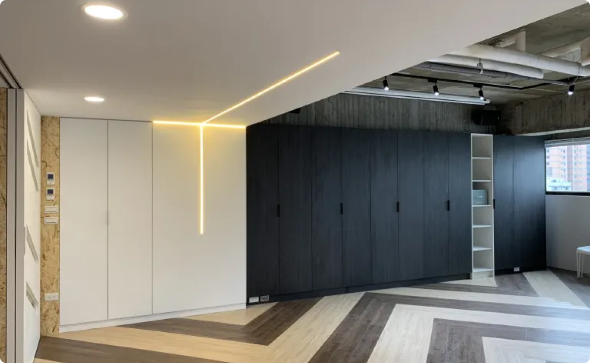

婚姻輔導
Marriage Counselling
除了能全面地評量情侶/夫妻關係，使從事婚前/婚姻輔導的專業人員能藉此幫助情侶/夫妻了解彼此關係中的長處及待成長之處外，並透過實際的課程練習來學習有效溝通以及衝突解決，使彼此的關係更加穩固。
PREPARE/ENRICH 專業課程
婚前輔導/婚後成長的輔導工具
PREPARE/ENRICH 是美國資深婚姻輔導專家大衛. 歐森博士(Dr. David Olson)設計的一套婚前輔導/婚後成長的輔導工具。至今已幫助了四百萬對以上的情侶及夫妻，有極高的效度與信度，是一套可靠有效且使用簡便的成長課程。

輔導內容與資訊
我們的婚姻輔導
對象
- 預備結婚或穩定交往的將婚情侶
- 已婚夫妻
課程目標
- 探討兩人關係中的長處與待成長之處
- 學習實用的溝通技巧，包括明確表達與積極聆聽
- 學習以「解決衝突十部曲」來化解爭執與衝突
- 使用「伴侶和家人關係圖」來探討情侶/夫妻的關係與兩人的原生家庭
- 擬定財務管理與預算練習
- 擬定個人的、二人共同的目標
方式
- 線上評量＋4次會談（男女雙方皆須參加，協談員與情侶/夫妻進行會談）
時間
- 婚前輔導建議於婚禮前3-6個月開始進行
- 每次會談時間由雙方約定，每次一個半小時
會議據點
- 台北市松山區/大安區、新竹市東區、台中市西區（若需要也提供遠距視訊輔導）
輔導收費
- 新台幣 8000正 (二人費用)
@台北市大安區（科技大樓站）
@台北市松山區（南京三民站）
@台中市西區
常見問題
看看有沒有你需要的答案!
什麼人需要來做婚前輔導？
一、兩人想要結婚但時有衝突，不知道如何好好走下去。二、交往穩定一年以上，但不確定是否預備好進入婚姻。三、結婚是人生大事，應該要透過婚前輔導做足準備。
為什麼需要接受婚前輔導？
透過協談員了解若進入婚姻可能面對的挑戰與困難，並且學習「聽清楚」「說明白」的溝通技巧，對婚姻有正確的期待。
協談如何進行呢？
完成線上問卷後，協談員跟伴侶約時間地點進行4次會談，一對二的會談時間由雙方一起協調，協談員的角色主要是引導雙方的對話、說出心裡的感受、聽懂對方的真正需要。
其中一方或雙方不是基督徒可以接受輔導嗎？
很歡迎！
我們的婚姻關係很挑戰，可以一人來接受輔導嗎？
PE問卷需要雙方都參與，關係也需要兩方的對話才能幫助，所以需要兩人都參與喔！